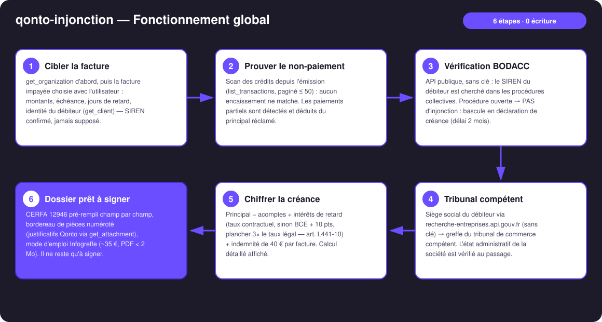
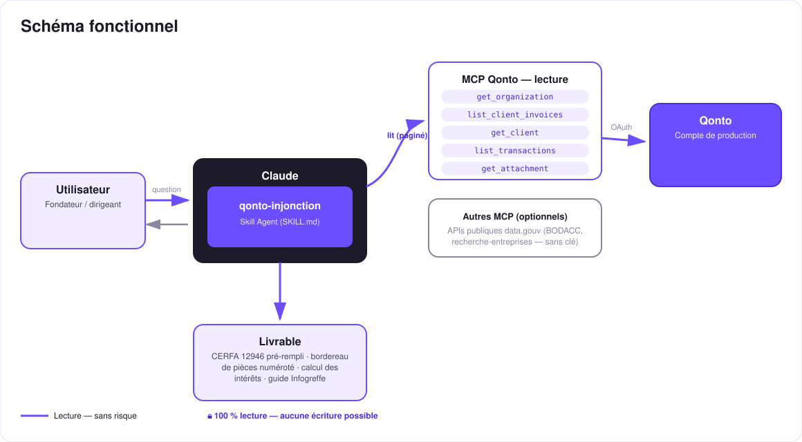

Quand la relance ne suffit plus — le dossier d'injonction de payer prêt à signer, depuis le compte Qonto.
Les relances ont échoué (voir qonto-invoice-chaser), la mise en demeure est restée sans réponse. L'injonction de payer coûte ~35 € et se fait sans avocat — mais presque personne n'ose : formulaire intimidant, intérêts à calculer, tribunal à trouver. Le skill fait tout ça depuis le compte Qonto :
API publique sans clé : débiteur en procédure collective → PAS d'injonction, le skill réoriente vers la déclaration de créance (délai 2 mois) et la rédige.
Principal (acomptes déduits), intérêts BCE + 10 pts (plancher 3× le taux légal — art. L441-10), indemnité de 40 € — formule affichée.
CERFA 12946 pré-rempli champ par champ, bordereau de pièces numéroté (justificatifs Qonto), tribunal compétent identifié depuis le siège du débiteur.
Dépôt dématérialisé ~35 €, pièces PDF < 2 Mo, et la suite : ordonnance → signification → opposition 1 mois. Le dépôt, c'est toi.
| Prérequis | Détail | Obligatoire |
|---|---|---|
| Compte Qonto production | Le skill s'adapte à toute organisation — get_organization d'abord, zéro donnée en dur | ✅ |
| Pays | Procédure CERFA : France. Autres pays Qonto (DE, ES, IT…) : dossier factuel complet mais sans formulaire — jamais de forme ni de taux étranger inventé | ℹ️ détecté |
| MCP Qonto connecté | Connecteur officiel (claude.ai / Claude Desktop), login OAuth | ✅ |
| Accès web (APIs publiques) | BODACC + recherche-entreprises.api.gouv.fr — sans clé, sans compte. Sinon le skill demande les 2 infos manquantes | ⭕ recommandé |
| Relance amiable déjà faite | Mise en demeure envoyée (LRAR) — sinon le skill renvoie d'abord vers qonto-invoice-chaser | ⭕ conseillé |

qonto-prescription-guard
Zéro écriture, par conception : le skill lit Qonto et deux APIs publiques sans clé, calcule, assemble — et s'arrête au dossier prêt à signer. Rien n'est déposé, rien n'est signifié, rien n'est signé. Le dépôt sur Infogreffe, c'est l'utilisateur, avec sa signature. Aucun acte juridique n'est jamais exécuté par une IA.
| Situation du débiteur | Route | Ce que le skill produit | Délai clé |
|---|---|---|---|
| In bonis (rien au BODACC) | Injonction de payer (art. 1405 s. CPC) | CERFA 12946 pré-rempli + bordereau + calcul + guide Infogreffe (~35 €) | Prescription 5 ans (art. L110-4) |
| Procédure collective (sauvegarde, RJ, LJ) | Déclaration de créance (art. L622-24) | Relevé de créance rédigé : principal, intérêts arrêtés au jugement, pièces, adresse du mandataire si publiée | 2 mois après publication BODACC |
| Société radiée / introuvable | Ni l'une ni l'autre | Constat + conseil de consulter un professionnel | — |
| Poste | Règle | Exemple (inventé) : INV-2026-017, 4 800 € TTC, 92 j de retard |
|---|---|---|
| Principal | Total TTC − acomptes prouvés | 4 800,00 € |
| Intérêts de retard | Taux contractuel, sinon BCE + 10 pts (plancher 3× taux légal), du lendemain de l'échéance au dépôt, /365 | 4 800 × 12,15 % × 92/365 ≈ 147,00 € (taux illustratif) |
| Indemnité forfaitaire | 40 € par facture (art. D441-5) | 40,00 € |
| Total réclamé | Chaque ligne séparée sur le formulaire | ≈ 4 987,00 € |
| Sortie | Format | Quand |
|---|---|---|
| Réponse dans la conversation | Tableaux markdown : créance chiffrée, pré-remplissage CERFA champ→valeur, bordereau ✅/📋, bandeau de route | Toujours — c'est la base |
| Dossier imprimable | Fichier/artifact HTML : page de garde, calcul, CERFA pré-rempli, bordereau — à enregistrer en PDF | Si l'hôte affiche les fichiers ; repli automatique sur les tableaux sinon |
| Pièces du bordereau | Justificatifs Qonto récupérés (get_attachment) + liste « à fournir » | À chaque dossier |
La démo ≤ 3 min jointe à la PR suit le storyboard : problème → preuve du non-paiement + vérification BODACC → calcul des intérêts + tribunal → le dossier complet prêt à signer → dépôt Infogreffe. Tous les chiffres montrés sont des exemples inventés. Le script détaillé de tournage est conservé en interne (hors dépôt).
| Idée | Effort | Note |
|---|---|---|
| Injonction de payer européenne (formulaire A, règlement 1896/2006) | Moyen | Pour les débiteurs dans un autre État membre — même moteur de calcul |
| Suivi post-dépôt : signification (6 mois) et opposition (1 mois) | Faible | Réutilise l'horloge de qonto-prescription-guard |
| Multi-factures : une requête par débiteur regroupant N factures | Faible | Le bordereau et le calcul savent déjà empiler |
| Brouillon d'email au greffe / au commissaire de justice (MCP email détecté dynamiquement) | Faible | Multi-MCP optionnel, dans l'esprit du kickoff |